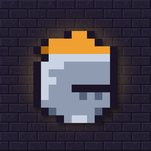
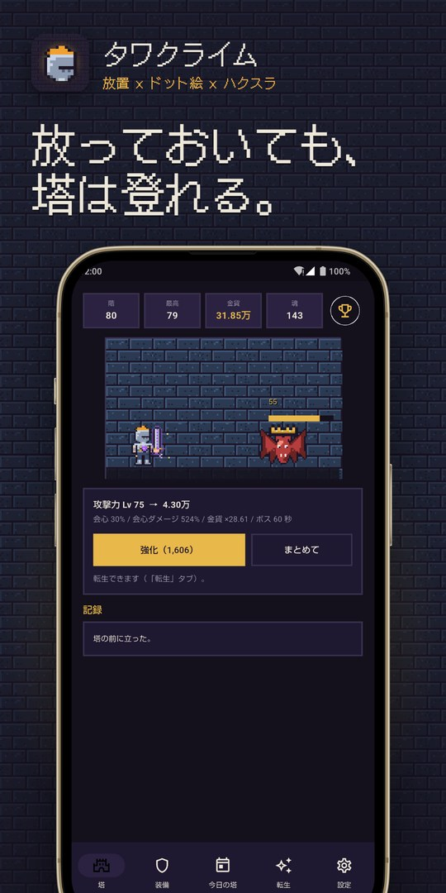
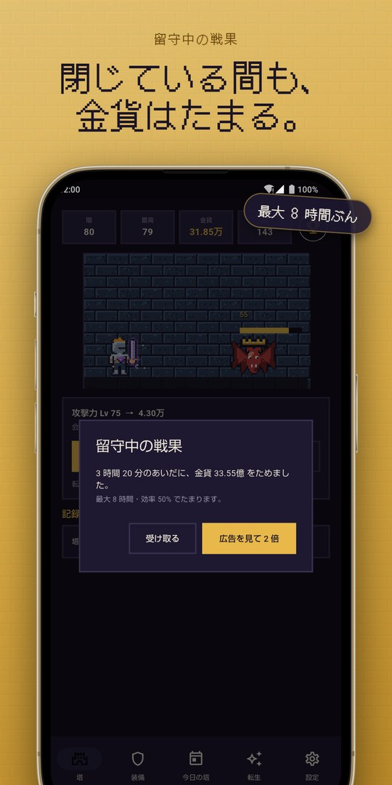
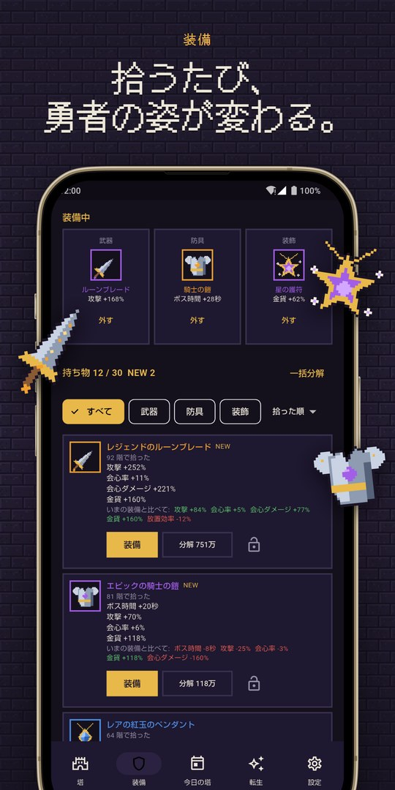
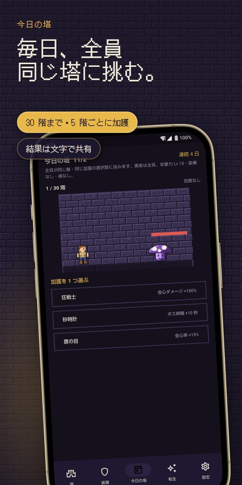
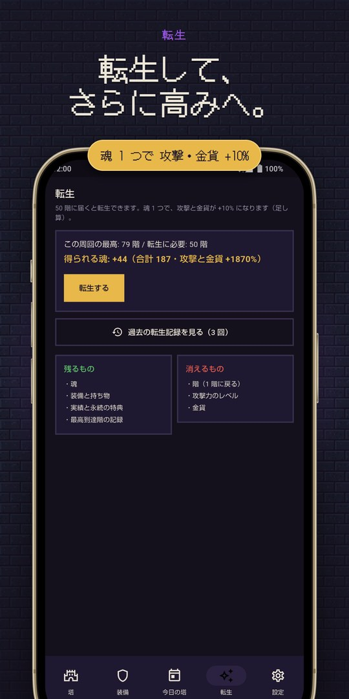
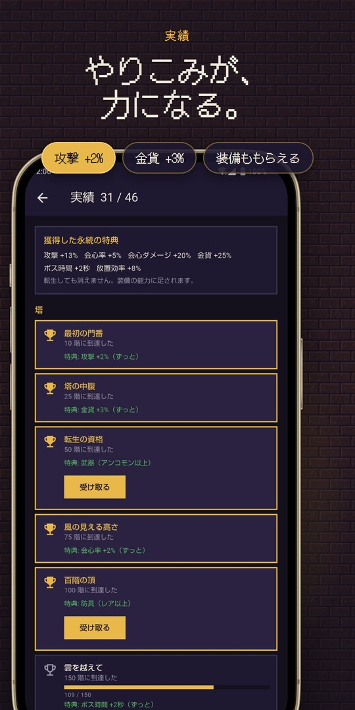
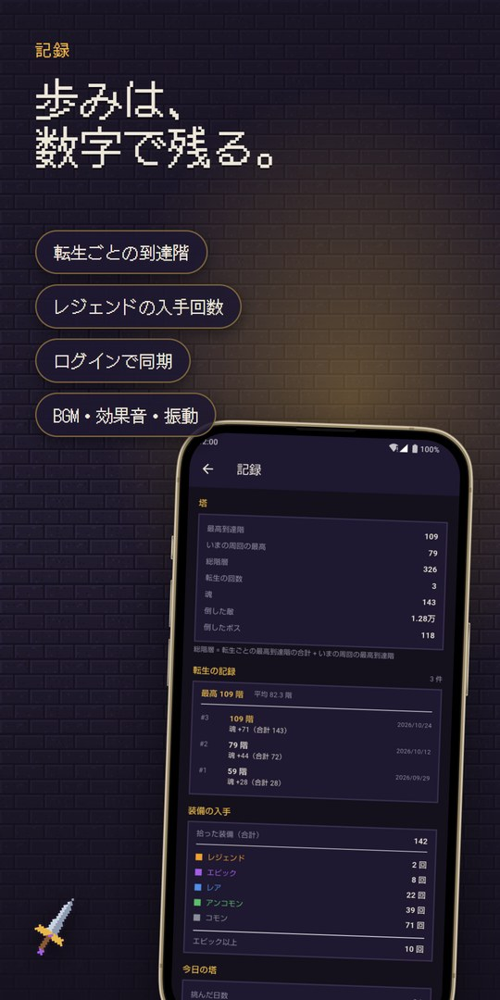

放っておいても、塔は登れる。
勇者が無限の塔を自動で登っていく、ドット絵の放置 RPG。拾った装備で、勇者の見た目が変わります。
Preview
アプリのドット絵を使ったイメージです（実際の画面とは異なります）。
Features
敵を倒して階を進み、10 階ごとにボスが待っています。操作は、金貨で攻撃力を強化するだけ。アプリを閉じている間も、金貨はたまります（最大 8 時間ぶん）。
武器・鎧・お守りの 3 枠。階が進むほど装備の段階が上がり、見た目も変わります。32×32 のドット絵を重ね描きしています。
「今日の塔」は、日本時間の 0 時に切り替わる 30 階の塔。3 つの加護を選んで挑み、結果は文字で共有できます。
行き詰まったら転生して、魂をもらいます。魂は 1 つにつき、攻撃力と金貨が +10%。回を重ねるほど、深くまで登れます。
実績を達成すると、装備や能力の恒久アップが手に入ります。転生ごとの到達階や、レジェンドの入手回数などの記録も確認できます。
登録なしですぐ遊べます。設定から Google でログインすると、データをクラウドに保存し、複数の端末で続きを遊べます。ガチャはありません。
Screenshots
← スワイプまたはスクロールで確認できます







Story
個人で開発しています。忙しい日でも、すきま時間にのぞくだけで少し進んでいる。そんな放置ゲームを、ドット絵の見た目にこだわって作りました。
ガチャも、画面いっぱいの全画面広告もありません。広告は、画面下のバナーと、自分で選んで見る動画広告だけです。詳しくはプライバシーポリシーをご覧ください。
こんな方に使っていただけたら嬉しいです。
FAQ